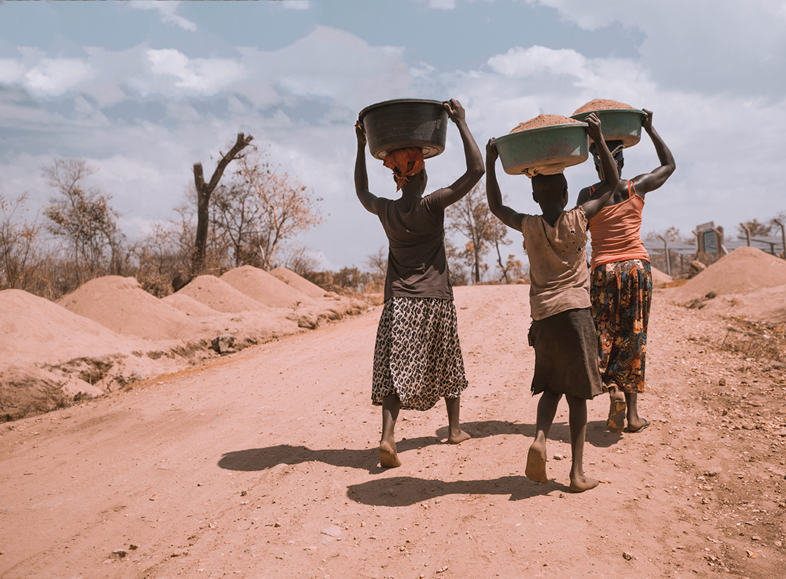

Where health, empowerment, and innovation meet
Project 01
Since its initiation, UDHA has operated a number of HIV/AIDS-related projects including the Orphaned Vulnerable Children project in Mayuge and the rest in the Iganga and Luuka districts. We aim to provide access to care, treatment, and support. With a strong network with the local government and other development partners such as TASO and the Global Fund, we provide services like HCT, TB screening and testing, prevention mechanisms through the ABC+ model, and biomedical prevention through other health service providers.

Project 02
Recently, UDHA has had the privilege to connect to young mothers through the support of multiple development partners. The aim is to reach out to young mothers in the Luuka and Iganga districts that previously left schooling to care for their new child and teach them profitable trades such as hairdressing, sewing, and baking so that they can provide for their new family.
Project 03
In a partnership with GlobeMed at Washington University in St. Louis in 2010, we initiated a community-based nutrition program for children and young mothers in the Luuka and Iganga Districts. This included a selected team of volunteers to carry out growth monitoring and promoting, as well as encourage backyard farming through village demonstration gardens. Over time, this developed to also encompass ante and postnatal care in Naigoyba Health Center III. These health centers provide maternity services, immunizations, and nutritional supplements geared to preventing malnutrition in young children and new mothers. Along with the dedicated health staff, Community Health Workers (CHWs) also contribute to home visits, providing care and maternal health information from village to village for those that cannot access hospital resources.
Project 04
Since its establishment in 2003, UDHA operates and runs a youth resource center with the support of development partners like GlobeMed to provide youth-friendly services and a resource center. We have reached over 50,000 youths in Iganga and Luuka Districts through activities that include: reproductive education outreach, menstrual destigmatization and distribution of reusable pads to young women and girls, guidance counseling, peer mentorship, HIV counseling and testing, income generation activities, music and dance.
Project 05
We strive to ensure that access to health is achieved as stated in the MDGs — it is our mandate as UDHA to ensure that communities access and demand health services as a right. At our health centers, we provide services including maternity, laboratory, admissions, outpatient services, and general clinical care and education. We also organize and offer free services during our 'visiting doctors program'.
Project 06
UDHA is committed to literacy building in communities. Naigobya Technical Institute is registered with the Uganda Private Vocational Institutions Association (UGAPRIVI). The institute provides students with both academic education and technical skills in carpentry, building, bricklaying, and tailoring. Since its inception, over 1,000 technicians have been trained in different trades. The school accommodates 10–20 students and carries out agriculture on its 25-acre facility, also serving as a community platform for sensitization and outreach.
Project 07
Since its initiation, UDHA has maintained a strong volunteer program that includes both national and international volunteers. We believe in improving our competence with both technical and student volunteers. UDHA has worked with over 100 volunteers nationally and internationally, and also runs an internship program for university students at different times of the year.